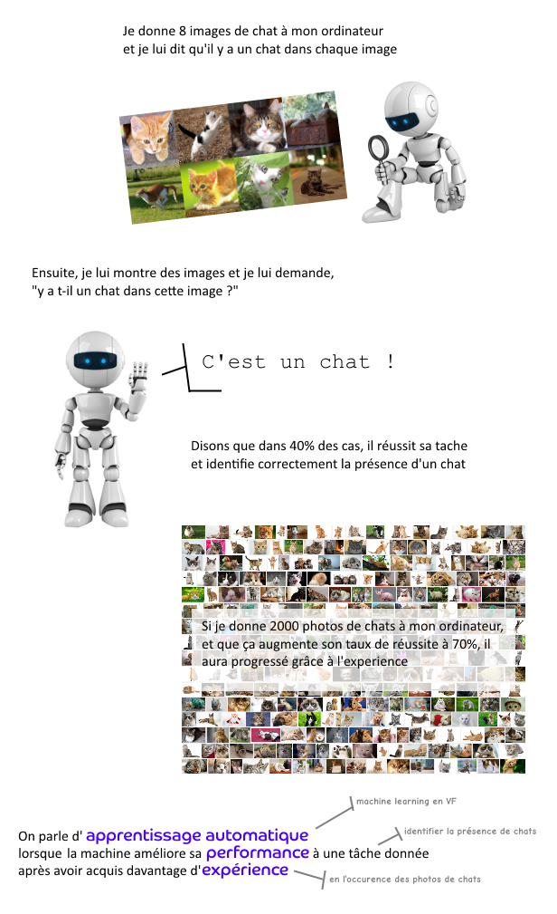
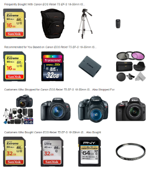

Google labellise une photo de personne noire "gorille"
Les conséquences à la fois merveilleuses et effrayantes des machines qui apprennent

Arthur Samuel était convaincu que faire jouer un ordinateur à un jeu de plateau était une excellente manière de faire progresser l'intelligence artificielle. Après avoir développé un algorithme permettant d'évaluer des coups à jouer (l'élagage alpha-beta), il se retrouve freiné par le manque de puissance de son ordinateur. Celui-ci n'est alors capable de prévoir "que" quelques coups d'avance.
Il réalise alors que, si son ordinateur pouvait garder en mémoire ses parties précédentes, il pourrait identifier rapidement les "branches" de coups intéressantes, et éliminer les moins optimales. Il peut ainsi décupler la compétence de son programme, en remplaçant la puissance brute par l'expérience.
En 1959, il présente ses résultats appliqués au jeu de dames. Son ordinateur est alors capable de battre occasionnellement des joueurs amateurs.
Ce principe d'expérience est fondamental à l'idée de "Machine Learning", ou "Apprentissage Automatique" en Français.
Pour l'illustrer à nouveau, voici une explication contenant des chats, parce que tout le monde aime les chats :

Et ça, c'est Tom M. Mitchell, qui l'a dit, répondant ainsi à la question d'Alan Turing "les machines peuvent-elles penser?" en proposant une autre question : "les machines peuvent-elles faire ce que nous, en tant qu'entités pensantes, faisons?".
Mais assez de théorie ! Dans le monde d'aujourd'hui, le vrai, où les volumes de données atteignent des extrêmes et où ce Big Data représente un défi colossal pour les entreprises, quelles sont les applications de l'apprentissage automatique ?
De nos jours, l’application du Machine Learning la plus répandue dans le secteur de l’e-commerce est celle du marketing prédictif et de la recommandation de produits. Les recommandations s‘imposent sur le web marchand pour plusieurs raisons :
Elles permettent d’augmenter le panier moyen et donc le chiffre d’affaires
Elles améliorent l’expérience client en facilitant l’acte d’achat
Elles sont de plus en plus faciles à mettre en place grâce à la maturité des technologies (solutions largement accessibles, variées et pertinentes)
Les produits suggérés peuvent remplir différentes fonctions :
La découverte en mettant en avant des produits qui interessent habituellement les utilisateurs similaires
La proposition d’alternatives pour ne pas perdre un potentiel acheteur qui ne trouverait pas son bonheur
La proposition de produits complémentaires (le cross-selling, par exemple les accessoires pour un appareil photo)
La recommandation est d’autant plus efficace qu’elle est personnalisée. La personnalisation exige de suggérer des produits adaptés à chaque internaute. Elle apporte une plus grande pertinence des recommandations, une meilleure expérience client et un impact sur le panier moyen plus important.
Parmi les différents modes de recommandation de produits, l’apprentissage automatique s’appuie sur la construction de modèles prédictifs de scores de produit selon les références déjà consultées ou achetées par un internaute, et les probabilités qu’un acheteur soit convaincu par un produit après en avoir consulté d’autres. La machine va donc recommander les produits qui ont les meilleurs scores.
Une forme d’analyse des données des fiches produits est l’analyse sémantique en temps réel, qui permet d’évaluer les goûts des utilisateurs en croisant les descriptifs des produits consultés et achetés. Ce mécanisme va donc recommander une sélection unique de produits qui correspondent le mieux au profil de l’internaute.
Si le client n’achète pas les produits recommandés, la machine en déduit qu’il faut réduire le score de ces produits dans cette situation, car ils n’ont pas permis de convaincre l’acheteur. Au contraire, si l’acheteur est convaincu, la machine retiendra la pertinence de la suggestion, et renforcera son score à l’avenir.
Cette méthode a une très forte influence sur les achats des internautes, et comporte des avantages et des inconvénients :
Avantages : solution automatique, individualisation/personnalisation des recommandations (1-to-1), réactivité, valorisation de la fidélité des clients, bonne gestion des nouveaux visiteurs.
Inconvénients : besoin de beaucoup de données, processus d’apprentissage complexe et sensible, dépendant de la richesse des qualifiants produits
|  | Globalement, il doit penser avoir des chances assez bonnes de me refourguer une carte SD... |
Amazon, un des champions du Machine Learning sur ses propres sites d’e-commerce, est également un fournisseur majeur de services cloud. Depuis septembre 2015, il est directement possible de faire appel à l’intelligence artificielle d’Amazon via AWS, sa plateforme de services informatiques auprès des entreprises, ouvrant la voix à de nouvelles applications.
Le Machine Learning se divise en trois types d'apprentissages automatiques :
Lorsqu'il s'agit d'optimiser une stratégie de décision face à une multitude de situations possibles, on utilise l'apprentissage par renforcement. Dans le jeu de dames, il existe 500 milliards de milliards de situations de jeu possibles. Avec les moyens de l'époque d'Arthur Samuel, il était impossible d'analyser chaque situation de plateau, et la seule réponse possible était de trouver l'option la plus prometteuse statistiquement.
C'est le même type de problème qui se pose à la Google Car : le nombre de situations dans laquelle le véhicule peut se retrouver est infiniment grand. Le véhicule s'améliore donc, non pas en envisageant chaque situation possible, mais en affinant ses modèles statistiques grâce à son expérience.
Lorsqu'il ne s'agit pas de prendre la "meilleure décision possible", mais plutôt de répondre à une question fermée, telle que "y a-t-il un chat dans cette image?", on utilise l'apprentissage supervisé. Le principe est de nourrir la machine avec des couples de question-réponse, par exemple avec des milliers d'images labellisées "avec chat", et des milliers d'images labellisées "sans chat".
Cette base de données est appelée ensemble d'apprentissage. Plus elle est complète, plus l'ordinateur est pertinent. L'apprentissage supervisée est particulièrement utilisée dans la reconnaissance d'images ou de sons, et dans la classification de données, par exemple pour identifier le spam dans une boîte mail.
Enfin, si l'on souhaite analyser des quantités importantes de données pour y trouver des tendances et des motifs, sans savoir ce qu'on cherche précisément, on fera appel à l'apprentissage non-supervisé.
Contrairement à l'apprentissage supervisé, on ne propose ici pas de solutions à l'ordinateur. On lui demande de tirer lui-même ses conclusions sur les manières de trier, de regrouper ou de relier ces données. Plus complexe techniquement et nécessitant une expertise dans la réalisation, l'application de l'apprentissage non-supervisé reste rare dans le monde réel.